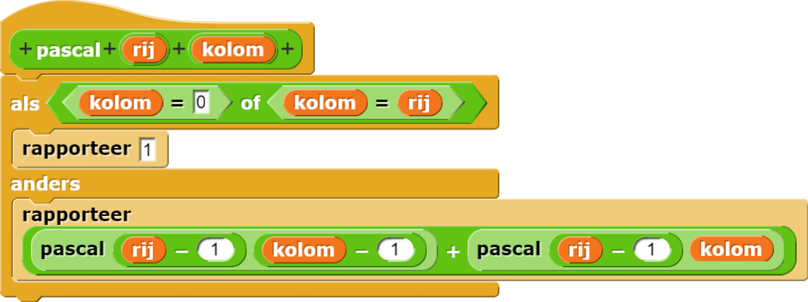

Dit is een oplossing voor het pascalblok:

Er zijn twee basisgevallen, het begin en het eind van een rij. De recursieve aanroep berekent de som van twee waardes in de vorige rij.
= +
Je gaat nu uitvinden hoeveel recursieve aanroepen je nodig hebt om een waarde in Pascals Driehoek te berekenen.
pascalblok aan om bij te houden hoe vaak het blok uitgevoerd wordt.pascalblok aangeroepen wanneer je
berekent? Veel van de recursieve aanroepen zijn overbodig. zal bijvoorbeeld veel aanroepen, om iedere keer dezelfde informatie te vragen.
pascal die vaak gebruikt wordt: Bouw een versie van pascal die deze formule gebruikt. Vergelijk hoe efficiënt deze
nieuwe versie is met de oude, recursieve versie.